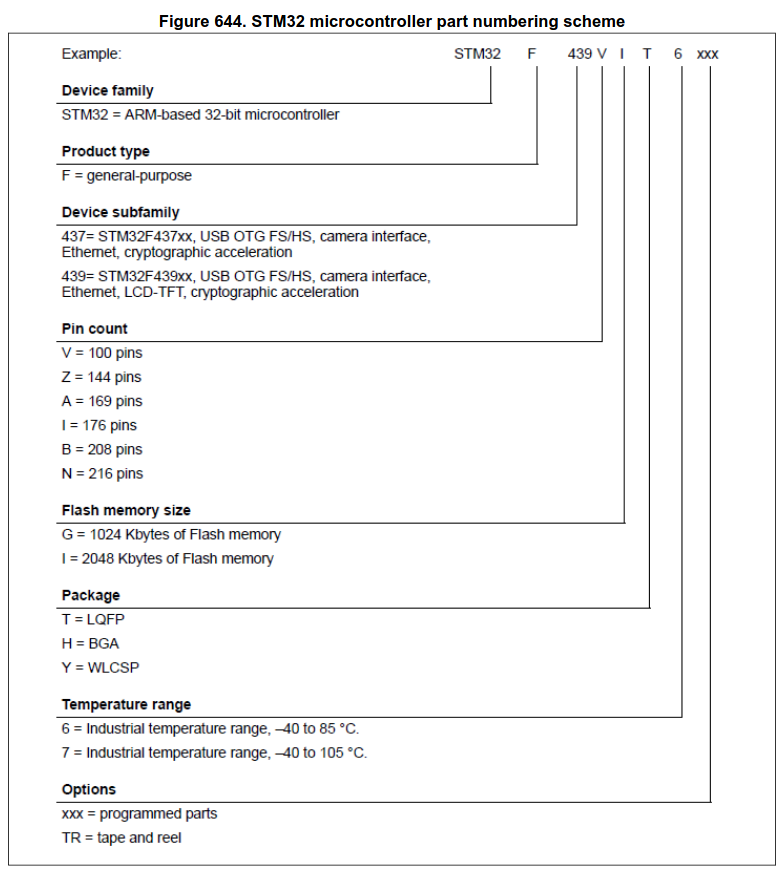

Пример: STM32F051K4U4xxx
|
Семейство |
Тип |
Подсемейство |
Кол-во выводов |
FLASH, KB |
Корпус |
Диапазон температур |
Опции |
|
STM32 - 32-битовые ARM-Cortex микроконтроллеры |
F – общее применение L – с низким энергопотреблением U - ультранизкое энергопотребление H - высокая производительность G - универсальные энергоэффек-тивные чипы, беспроводные интерфейсы (LoRa, BLE) TS – семейство TouchScreen W – семейство wireless system-on-chip |
60 – multitouch resistive 103 – performance line |
F – 20 G - 28 K – 32 T – 36 H – 40 C – 48/49 R – 64 O – 90V – 100 Z – 144 I – 176 B – 208 N – 216 |
4 – 16 6 – 32 8 – 64 B – 128 Z – 192 С – 256 D – 384 E – 512 F – 768 G – 1024 I – 2048 |
H - UFBGA N – TFBGA P - TSSOP T – LQFP U – V/UFQFPN Y – WLCSP |
6 –40…+85 °C. 7 –40…+ 105 °C. |
xxx – programmed parts TR – tape and real |
Полное кодирование наименований микросхем расписано в документе UM1718 User manual, Приложение C:
Вот выдержка из этой документации:
STM32 microcontrollers naming conventions
STM32 microcontroller part numbers are codified following the below naming conventions:
• Подсемейство
The higher the number, the more features available.
For example STM32L0 line includes STM32L051, L052, L053, L061, L062, L063 subfamilies where STM32L06x part numbers come with AES while STM32L05x do not. The last digit indicates the level of features. In the above example:
– 1 = Access line
– 2 = with USB
– 3 = with USB and LCD.
• Количество ножек
– F = 20 pins
– G = 28 pins
– K = 32 pins
– T = 36 pins
– S = 44 pins
– C = 48 pins
– R = 64 (or 66) pins)
– M = 80 pins
– O = 90 pins
– V = 100 pins
– Q = 132 pins (e. g. STM32L162QDH6)
– Z = 144 pins
– I = 176 (+25) pins
– B = 208 pins (e. g. STM32F429BIT6)
– N = 216 pins
• Размер Flash памяти
– 4 = 16 Kbytes of flash memory
– 6 = 32 Kbytes of flash memory
– 8 = 64 Kbytes of flash memory
– B = 128 Kbytes of flash memory
– C = 256 Kbytes of flash memory
– D = 384 Kbytes of flash memory
– E = 512 Kbytes of flash memory
– F = 768 Kbytes of flash memory
– G = 1024 Kbytes of flash memory
– I = 2048 Kbytes of flash memory
• Корпус
– B = SDIP
– H = BGA
– M = SO
– P = TSSOP
– T = LQFP
– U = VFQFPN
– Y = WLCSP
